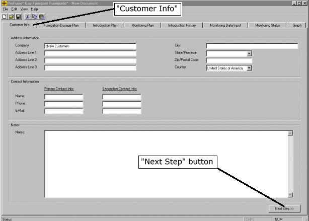

Customer Info Tab
Opening a new ProFume* gas fumigant Fumiguide* file will produce a screen image like the one below. While no information is required to be entered on this Customer Information tab, this is handy place to store address, contact details and notes about the fumigation. Rather lengthy notes can be typed into the note section at the bottom of this screen, such as special set-up, sealing or public notification steps. These notes will be saved within the file for future reference.
